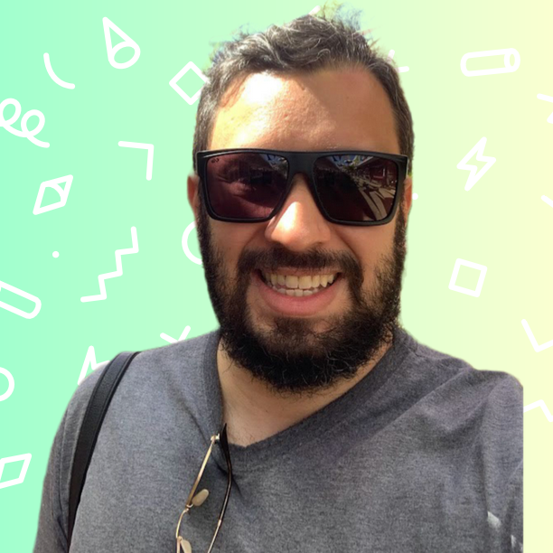

Patrick Cohenn
Desenvolvedor de software. Criador do X-Nerd Brasil.
Links
Portfólio Todos os meus projetos e trabalhos mais recentes. X-Nerd Brasil O portal de notícias nerd que eu criei.
Em breve
Novo projeto a caminho.
em breve
Em breve
Mais conteúdo chegando por aqui.
em breve
Em breve
Novidade em produção.
em breve
Em breve
Fique de olho, vem coisa nova.
em breve